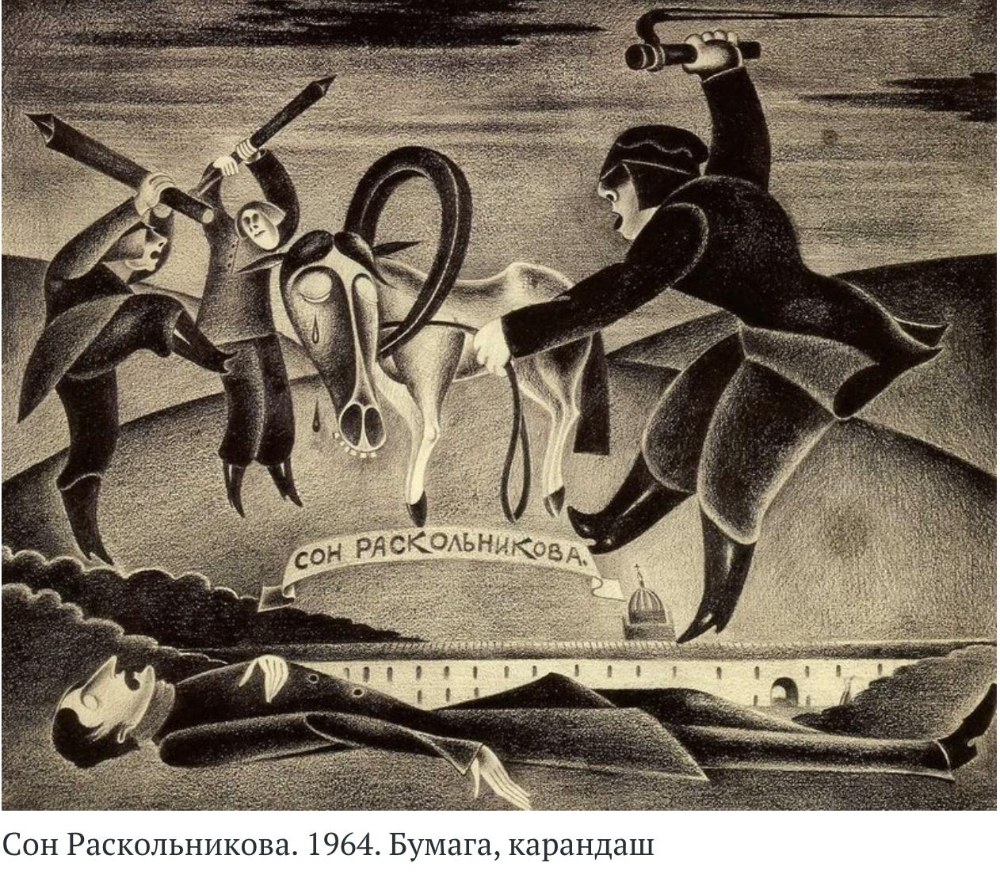

Rusn 397. Week 3-6. Crime and Punishment.
- Wed, 17 Sep Crime and Punishment, Part I
- Mon, 22 Sep Crime and Punishment, Part II
- Mon, 29 Sep Crime and Punishment, Part III
- Mon, 6 Oct Crime and Punishment, Part IV
- Wed, 8 Oct Crime and Punishment, Part V

Figure 1. Mikhail Shemiakin Crime and Punishment
Dream of Raskolnikov from Part I (1964)